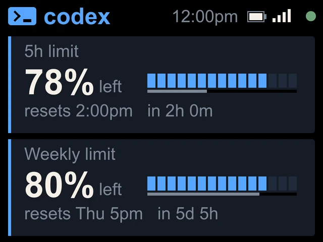

ChatGPT Plus with Codex
Codex on ChatGPT Plus.
Your 5-hour and weekly Codex limits, in blue, beside your keyboard. Sign in with a code on the screen.


On the screen
Two limits, budget left.
- 5h limit and Weekly limitOne card each, titled the way the Codex CLI's /status titles them.
- Percent leftCodex shows the budget you have left, so codeMeter does too, with a small left beside it. The blue bar drains like a fuel gauge.
- Resets and countdownThe reset time and how long until then, like resets 2:00pm in 2h 0m.
- PaceThe thin line under the bar is time left. If your budget falls behind it, the number and the card outline turn amber, then red.
Try it
Check your Codex pace.
Type in what the Codex CLI's /status shows you.
Set up
Phone only.
- 1Plug it in
Join the
codeMeter-XXXXXXWi-Fi from your phone and tap Setup Device. - 2Pick OpenAI Codex
Choose your home Wi-Fi, enter its password and Save. No token, no computer.
- 3Type the code
The device restarts and shows a code and a QR. Open
auth.openai.com/codex/device, sign in to ChatGPT and type the code.
Sign-in
The code on the screen.


In use
Glance, don't check.
It sits beside the keyboard, so your limits are a look away while you work.


8 stand colours. Pick one to start your build.
FAQ
Questions.
Does it work with ChatGPT Plus?
Yes. ChatGPT Plus is the plan we verified Codex on. codeMeter shows the 5-hour and weekly limits as budget left, with reset times.
Does checking use up my Codex limit?
No. codeMeter reads the same usage endpoint the Codex CLI uses for /status. It makes no model calls, so it uses none of your Codex limit.
Do I need the Codex CLI or a computer?
No. Codex setup is done on your phone. The device shows a code; you sign in to ChatGPT on OpenAI's page and type it.
How long does the sign-in last?
The device renews its own sign-in, about every 10 days. If it ever lapses the screen says Codex login expired: hold B about 7 seconds and sign in again on the device.
Why does it show percent left, not used?
To match the Codex CLI, which shows what is left. On the Claude + Codex screen both sides show percent used so the bars compare.
myDeskMeter